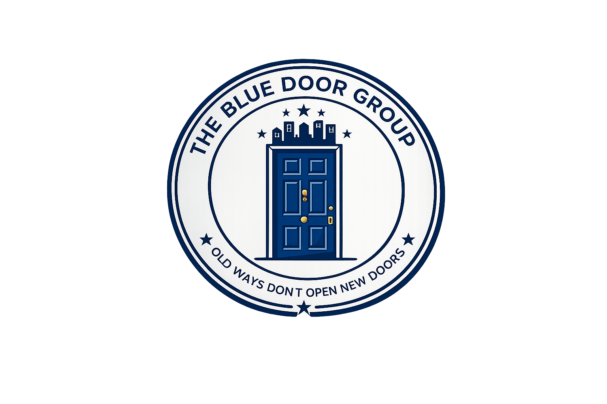

Source
Identify land parcels, properties, and opportunities with long-term potential.

A vertically integrated real estate company serving Arkansas and Missouri through residential development, income-producing properties, and carefully evaluated growth opportunities.
Each division strengthens the others — creating new assets, reliable cash flow, accumulated equity, and a stronger foundation for the next opportunity.
The Blue Door Development
Construction and strategic growth through land sourcing, efficient planning, internal financing, and residential new builds.
The Blue Door Properties
Rental assets and property operations designed to create dependable monthly cash flow and long-term portfolio stability.
The Blue Door Investment
Private equity and strategic capital focused on carefully evaluated real estate assets and expansion opportunities.
Blue Door connects each stage of the property lifecycle so that every project can contribute to the next.
Identify land parcels, properties, and opportunities with long-term potential.
Create new residential assets or purchase properties with strong fundamentals.
Improve performance through intentional design, renovations, and careful operations.
Use accumulated equity and operating cash flow to support future development.
Repeat the process with discipline as market conditions and opportunities evolve.
From residential development to rental-property repositioning, Blue Door looks for practical ways to create stronger assets and more durable long-term value.

Efficient floor plans, carefully selected finishes, and trusted supplier relationships work together to create stronger long-term value.

Targeted acquisition and improvement strategies strengthen long-term portfolio performance.

Integrated planning allows operating assets and strategic capital to support future development.
Growth requires the willingness to learn, adapt, and build differently. Blue Door combines hands-on experience with a long-term ownership mindset to create better outcomes across changing market conditions.
The Blue Door story began with custom-built treehouses in the 1990s. Those early projects became a testing ground for materials, construction methods, and supplier relationships.
Over time, hands-on experience evolved into a larger strategy: develop new assets, operate dependable rental properties, build equity, and use that momentum to open the next door.
Read Our Story →
Blue Door is built around careful execution, clear communication, and a long-term approach to every property and partnership.
The communication was clear, the planning was thoughtful, and the project was handled with a real long-term mindset.
Project Partner Development CollaborationWhat stood out most was the attention to detail. Every decision felt intentional and connected to the bigger picture.
Property Stakeholder Residential PortfolioBlue Door brings a professional approach to both the property and the people involved. The standards are evident.
Community Partner Arkansas & MissouriBlue Door serves Arkansas and Missouri while considering strategic opportunities throughout the surrounding region.
Have land, a property, or a strategic opportunity? Start a conversation with the Blue Door team.